HTW E3 Testing
Analysis
R
Bayesian
HTW Methods
Methods
Participants A total of 166 participants (XXX% female, XXX% male) were recruited from the Indiana University Introductory Psychology Course. The average age of participants was XXX years (SD = XXX). Participants were randomly assigned to one of two training conditions: varied training or constant training.
Design The experiment employed a 2 (Training Condition: varied vs. constant).
Procedure Upon arrival at the laboratory, participants were provided with a description of the experiment and signed informed consent forms. They were then seated in front of a computer equipped with a mouse and were given instructions on how to perform the “Hit The Wall” (HTW) visuomotor extrapolation task.
The HTW task involved launching projectiles to hit a target displayed on the computer screen. Participants completed a total of 90 trials during the training stage. In the varied training condition, participants encountered three velocity bands (800-1000, 1000-1200, and 1200-1400). In contrast, participants in the constant training condition encountered only one velocity band (800-1000).
During the training stage, participants in both conditions also completed “no feedback” trials, where they received no information about their performance. These trials were randomly interleaved with the regular training trials.
Following the training stage, participants proceeded to the testing stage, which consisted of three phases. In the first phase, participants completed “no-feedback” testing from three novel extrapolation bands (100-300, 350-550, and 600-800), with each band consisting of 15 trials.
In the second phase of testing, participants completed “no-feedback” testing from the three velocity bands used during the training stage (800-1000, 1000-1200, and 1200-1400). In the constant training condition, two of these bands were novel, while in the varied training condition, all three bands were encountered during training.
The third and final phase of testing involved “feedback” testing for each of the three extrapolation bands (100-300, 350-550, and 600-800), with each band consisting of 10 trials. Participants received feedback on their performance during this phase.
Throughout the experiment, participants’ performance was measured by calculating the distance between the produced x-velocity of the projectiles and the closest edge of the current velocity band. Lower distances indicated better performance.
After completing the experiment, participants were debriefed and provided with an opportunity to ask questions about the study.
HTW Task
- need to create a demo version without consent form. And maybe separate windows for the different versions.
Experimental Task for the HTW Project. Programmed in Javascript, and making use of phaser.js.
Live Task Demo
Check the box at the bottom of the consent form, and then click Start Experiment.
Experiment 1
Analyses Strategy
All data processing and statistical analyses were performed in R version 4.31 Team (2020). To assess differences between groups, we used Bayesian Mixed Effects Regression. Model fitting was performed with the brms package in R Bürkner (2017), and descriptive stats and tables were extracted with the BayestestR package Makowski et al. (2019). Mixed effects regression enables us to take advantage of partial pooling, simultaneously estimating parameters at the individual and group level. Our use of Bayesian, rather than frequentist methods allows us to directly quantify the uncertainty in our parameter estimates, as well as circumventing convergence issues common to the frequentist analogues of our mixed models. For each model, we report the median values of the posterior distribution, and 95% credible intervals.
Each model was set to run with 4 chains, 5000 iterations per chain, with the first 2500 of which were discarded as warmup chains. Rhat values were generally within an acceptable range, with values <=1.02 (see appendix for diagnostic plots). We used uninformative priors for the fixed effects of the model (condition and velocity band), and weakly informative Student T distributions for for the random effects.
We compared varied and constant performance across two measures, deviation and discrimination. Deviation was quantified as the absolute deviation from the nearest boundary of the velocity band, or set to 0 if the throw velocity fell anywhere inside the target band. Thus, when the target band was 600-800, throws of 400, 650, and 1100 would result in deviation values of 200, 0, and 300, respectively. Discrimination was measured by fitting a linear model to the testing throws of each subjects, with the lower end of the target velocity band as the predicted variable, and the x velocity produced by the participants as the predictor variable. Participants who reliably discriminated between velocity bands tended to have positive slopes with values ~1, while participants who made throws irrespective of the current target band would have slopes ~0.
| Type | Parameter | Term | Description |
|---|---|---|---|
| Population-Level Effects | \(\beta_0\) | (Intercept) |
Intercept representing the baseline deviation |
| Population-Level Effects | \(\beta_1\) | conditVaried |
Effect of condition (Varied vs. Constant) on deviation |
| Population-Level Effects | \(\beta_2\) | bandInt |
Effect of target velocity band (bandInt) on deviation |
| Population-Level Effects | \(\beta_3\) | conditVaried:bandInt |
Interaction effect between training condition and target velocity band on deviation |
| Group-Level Effects | \(\sigma_{\text{Intercept}}\) | sd__(Intercept) |
Standard deviation for (Intercept) |
| Group-Level Effects | \(\sigma_{\text{bandInt}}\) | sd__bandInt |
Standard deviation for bandInt |
| Family Specific Parameters | \(\sigma_{\text{Observation}}\) | sd__Observation |
Standard deviation for Gaussian Family |
Results
Testing Phase - No feedback.
In the first part of the testing phase, participants are tested from each of the velocity bands, and receive no feedback after each throw.
Deviation From Target Band
Descriptive summaries testing deviation data are provided in Table 2 and Figure 2. To model differences in accuracy between groups, we used Bayesian mixed effects regression models to the trial level data from the testing phase. The primary model predicted the absolute deviation from the target velocity band (dist) as a function of training condition (condit), target velocity band (band), and their interaction, with random intercepts and slopes for each participant (id).
\[\begin{equation} dist_{ij} = \beta_0 + \beta_1 \cdot condit_{ij} + \beta_2 \cdot band_{ij} + \beta_3 \cdot condit_{ij} \cdot band_{ij} + b_{0i} + b_{1i} \cdot band_{ij} + \epsilon_{ij} \end{equation}\]Code
```{r}
#| label: tbl-e1-test-nf-deviation
#| tbl-cap: "Testing Deviation - Empirical Summary"
#| tbl-subcap: ["Constant Testing - Deviation", "Varied Testing - Deviation"]
#| layout-ncol: 2
result <- test_summary_table(test, "dist","Deviation", mfun = list(mean = mean, median = median, sd = sd))
result$constant
result$varied
```| Band | Band Type | Mean | Median | Sd |
|---|---|---|---|---|
| 100-300 | Extrapolation | 254 | 148 | 298 |
| 350-550 | Extrapolation | 191 | 110 | 229 |
| 600-800 | Extrapolation | 150 | 84 | 184 |
| 800-1000 | Trained | 184 | 106 | 242 |
| 1000-1200 | Extrapolation | 233 | 157 | 282 |
| 1200-1400 | Extrapolation | 287 | 214 | 290 |
| Band | Band Type | Mean | Median | Sd |
|---|---|---|---|---|
| 100-300 | Extrapolation | 386 | 233 | 426 |
| 350-550 | Extrapolation | 285 | 149 | 340 |
| 600-800 | Extrapolation | 234 | 144 | 270 |
| 800-1000 | Trained | 221 | 149 | 248 |
| 1000-1200 | Trained | 208 | 142 | 226 |
| 1200-1400 | Trained | 242 | 182 | 235 |
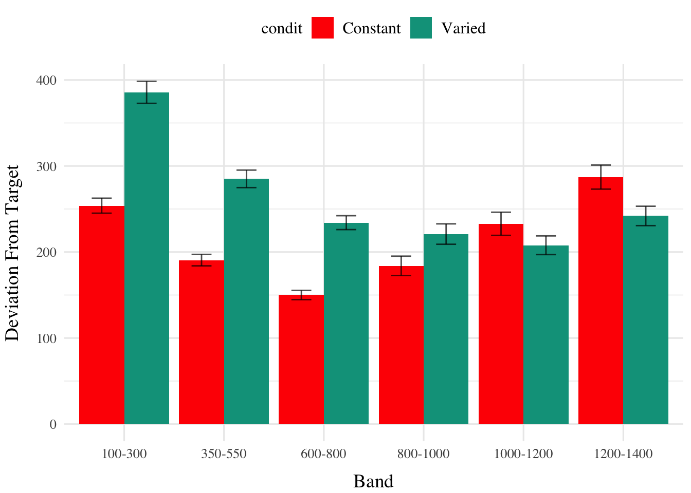
| Term | Estimate | 95% CrI Lower | 95% CrI Upper | pd |
|---|---|---|---|---|
| Intercept | 205.09 | 136.86 | 274.06 | 1.00 |
| conditVaried | 157.44 | 60.53 | 254.90 | 1.00 |
| Band | 0.01 | -0.07 | 0.08 | 0.57 |
| condit*Band | -0.16 | -0.26 | -0.06 | 1.00 |
| contrast | Band | value | lower | upper | pd |
|---|---|---|---|---|---|
| Constant - Varied | 100 | -141.49 | -229.19 | -53.83 | 1.00 |
| Constant - Varied | 350 | -101.79 | -165.62 | -36.32 | 1.00 |
| Constant - Varied | 600 | -62.02 | -106.21 | -14.77 | 1.00 |
| Constant - Varied | 800 | -30.11 | -65.08 | 6.98 | 0.94 |
| Constant - Varied | 1000 | 2.05 | -33.46 | 38.41 | 0.54 |
| Constant - Varied | 1200 | 33.96 | -11.94 | 81.01 | 0.92 |
The model predicting absolute deviation (dist) showed clear effects of both training condition and target velocity band (Table X). Overall, the varied training group showed a larger deviation relative to the constant training group (β = 157.44, 95% CI [60.53, 254.9]). Deviation also depended on target velocity band, with lower bands showing less deviation. See Table 3 for full model output.
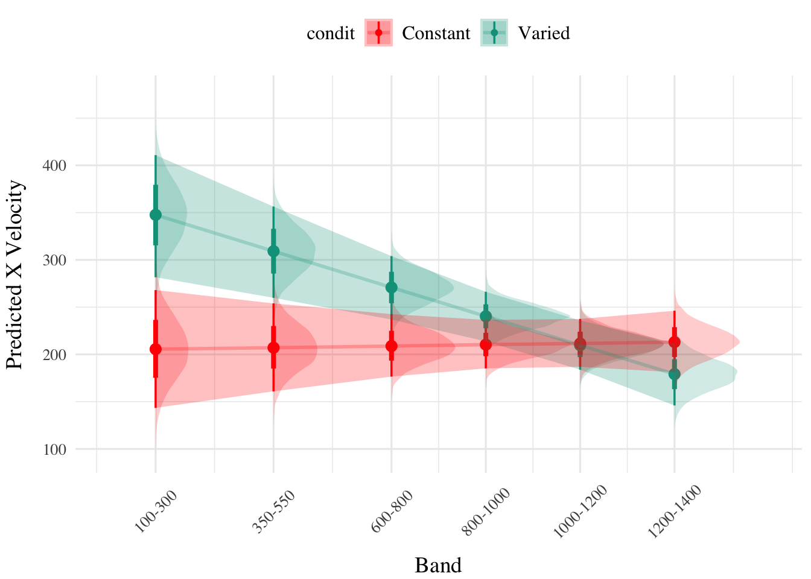
Discrimination between bands
In addition to accuracy/deviation, we also assessed the ability of participants to reliably discriminate between the velocity bands (i.e. responding differently when prompted for band 600-800 than when prompted for band 150-350). Table 4 shows descriptive statistics of this measure, and Figure 1 visualizes the full distributions of throws for each combination of condition and velocity band. To quantify discrimination, we again fit Bayesian Mixed Models as above, but this time the dependent variable was the raw x velocity generated by participants on each testing trial.
\[\begin{equation} vx_{ij} = \beta_0 + \beta_1 \cdot condit_{ij} + \beta_2 \cdot bandInt_{ij} + \beta_3 \cdot condit_{ij} \cdot bandInt_{ij} + b_{0i} + b_{1i} \cdot bandInt_{ij} + \epsilon_{ij} \end{equation}\]
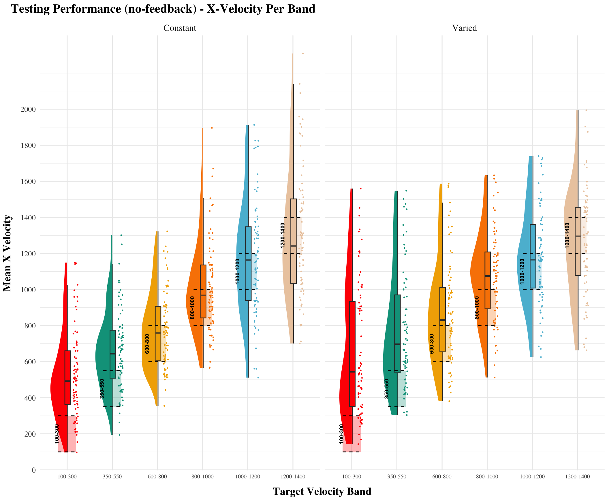
Code
```{r}
#| label: tbl-e1-test-nf-vx
#| tbl-cap: "Testing vx - Empirical Summary"
#| tbl-subcap: ["Constant Testing - vx", "Varied Testing - vx"]
#| layout-ncol: 2
result <- test_summary_table(test, "vx","X Velocity", mfun = list(mean = mean, median = median, sd = sd))
result$constant
result$varied
```| Band | Band Type | Mean | Median | Sd |
|---|---|---|---|---|
| 100-300 | Extrapolation | 524 | 448 | 327 |
| 350-550 | Extrapolation | 659 | 624 | 303 |
| 600-800 | Extrapolation | 770 | 724 | 300 |
| 800-1000 | Trained | 1001 | 940 | 357 |
| 1000-1200 | Extrapolation | 1167 | 1104 | 430 |
| 1200-1400 | Extrapolation | 1283 | 1225 | 483 |
| Band | Band Type | Mean | Median | Sd |
|---|---|---|---|---|
| 100-300 | Extrapolation | 664 | 533 | 448 |
| 350-550 | Extrapolation | 768 | 677 | 402 |
| 600-800 | Extrapolation | 876 | 813 | 390 |
| 800-1000 | Trained | 1064 | 1029 | 370 |
| 1000-1200 | Trained | 1180 | 1179 | 372 |
| 1200-1400 | Trained | 1265 | 1249 | 412 |
Code
```{r}
#| label: tbl-e1-bmm-vx
#| tbl-cap: "Experiment 1. Bayesian Mixed Model Predicting Vx as a function of condition (Constant vs. Varied) and Velocity Band"
#| tbl-subcap: ["Model fit to all 6 bands", "Model fit to 3 extrapolation bands"]
#| layout-ncol: 2
e1_vxBMM <- brm(vx ~ condit * bandInt + (1 + bandInt|id),
data=test,file=paste0(here::here("data/model_cache", "e1_testVxBand_RF_5k")),
iter=5000,chains=4,silent=0,
control=list(adapt_delta=0.94, max_treedepth=13))
GetModelStats(e1_vxBMM ) |> kable(escape=F,booktabs=T, caption="Fit to all 6 bands")
cd1 <- get_coef_details(e1_vxBMM, "conditVaried")
sc1 <- get_coef_details(e1_vxBMM, "bandInt")
intCoef1 <- get_coef_details(e1_vxBMM, "conditVaried:bandInt")
modelName <- "e1_extrap_testVxBand"
e1_extrap_VxBMM <- brm(vx ~ condit * bandInt + (1 + bandInt|id),
data=test |>
filter(expMode=="test-Nf"),file=paste0(here::here("data/model_cache",modelName)),
iter=5000,chains=4)
GetModelStats(e1_extrap_VxBMM ) |> kable(escape=F,booktabs=T, caption="Fit to 3 extrapolation bands")
sc2 <- get_coef_details(e1_extrap_VxBMM, "bandInt")
intCoef2 <- get_coef_details(e1_extrap_VxBMM, "conditVaried:bandInt")
```| Term | Estimate | 95% CrI Lower | 95% CrI Upper | pd |
|---|---|---|---|---|
| Intercept | 408.55 | 327.00 | 490.61 | 1.00 |
| conditVaried | 164.05 | 45.50 | 278.85 | 1.00 |
| Band | 0.71 | 0.62 | 0.80 | 1.00 |
| condit*Band | -0.14 | -0.26 | -0.01 | 0.98 |
| Term | Estimate | 95% CrI Lower | 95% CrI Upper | pd |
|---|---|---|---|---|
| Intercept | 478.47 | 404.00 | 551.45 | 1.00 |
| conditVaried | 142.04 | 37.17 | 247.59 | 1.00 |
| Band | 0.50 | 0.42 | 0.57 | 1.00 |
| condit*Band | -0.07 | -0.17 | 0.04 | 0.89 |
See Table 5 for the full model results. The estimated coefficient for training condition (β = 164.05, 95% CrI [45.5, 278.85]) suggests that the varied group tends to produce harder throws than the constant group, but is not in and of itself useful for assessing discrimination. Most relevant to the issue of discrimination is the slope on Velocity Band (β = 0.71, 95% CrI [0.62, 0.8]). Although the median slope does fall underneath the ideal of value of 1, the fact that the 95% credible interval does not contain 0 provides strong evidence that participants exhibited some discrimination between bands. The estimate for the interaction between slope and condition (β = -0.14, 95% CrI [-0.26, -0.01]), suggests that the discrimination was somewhat modulated by training condition, with the varied participants showing less senitivity between vands than the constant condition. This difference is depicted visually in Figure 5.@tbl-e1-slope-quartile shows the average slope coefficients for varied and constant participants separately for each quartile. The constant participant participants appear to have larger slopes across quartiles, but the difference between conditions may be less pronounced for the top quartiles of subjects who show the strongest discrimination. Figure Figure 6 shows the distributions of slope values for each participant, and the compares the probability density of slope coefficients between training conditions. Figure 7
The second model, which focused solely on extrapolation bands, revealed similar patterns. The Velocity Band term (β = 0.5, 95% CrI [0.42, 0.57]) still demonstrates a high degree of discrimination ability. However, the posterior distribution for interaction term (β = -0.07, 95% CrI [-0.17, 0.04] ) does across over 0, suggesting that the evidence for decreased discrimination ability for the varied participants is not as strong when considering only the three extrapolation bands.
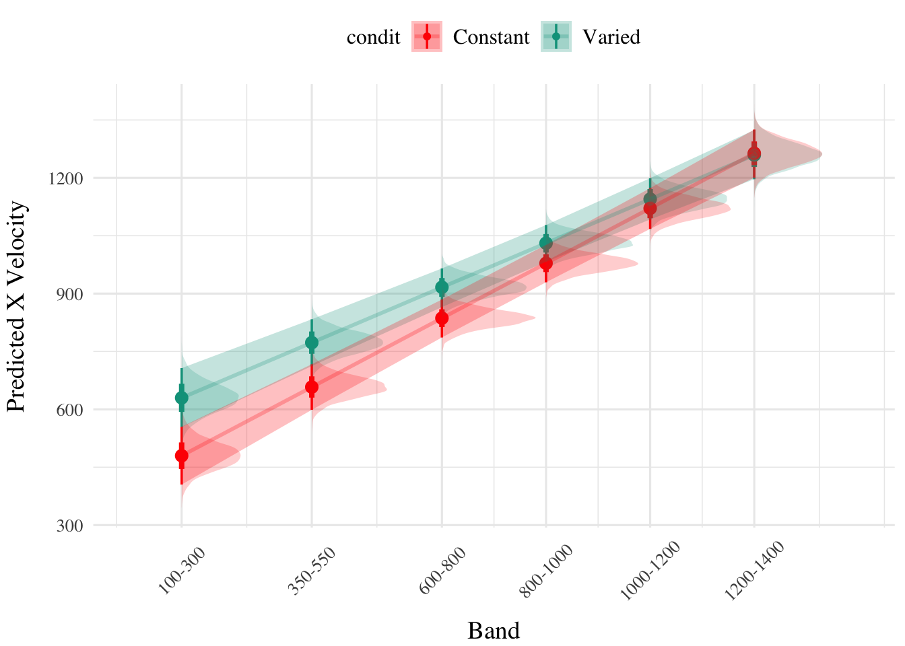
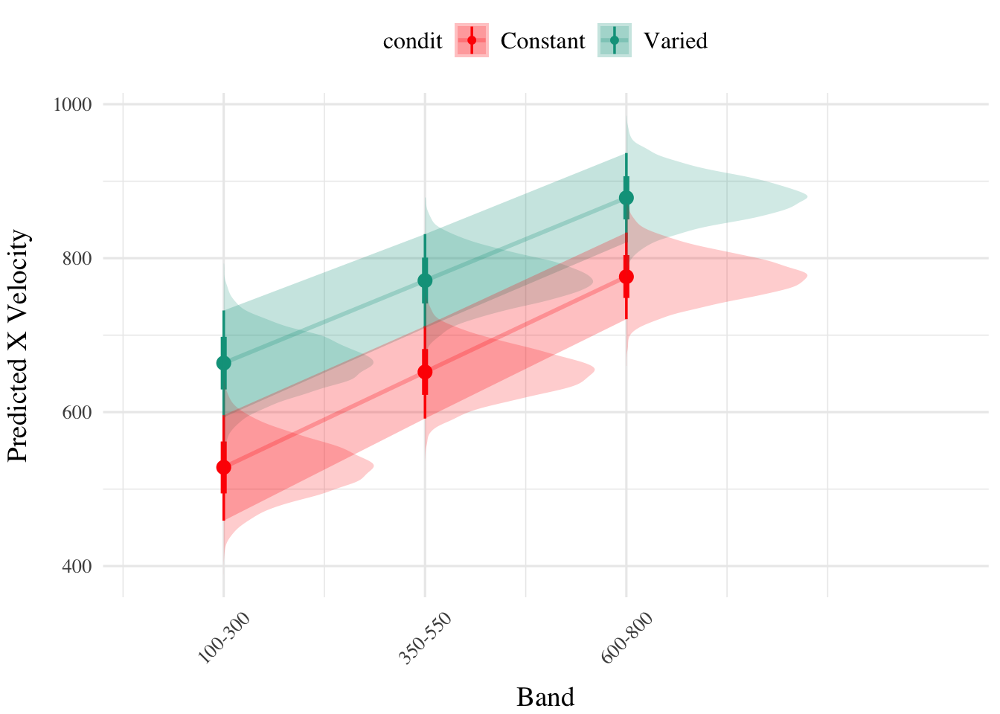
| Condition | Q_0%_mean | Q_25%_mean | Q_50%_mean | Q_75%_mean | Q_100%_mean |
|---|---|---|---|---|---|
| Constant | -0.107216 | 0.4840390 | 0.6900972 | 0.9309122 | 1.393253 |
| Varied | -0.199628 | 0.2677822 | 0.5908711 | 0.9038656 | 1.300655 |
Figure 6 shows the distributions of estimated slopes relating velocity band to x velocity for each participant, ordered from lowest to highest within condition. Slope values are lower overall for varied training compared to constant training. Figure Xb plots the density of these slopes for each condition. The distribution for varied training has more mass at lower values than the constant training distribution. Both figures illustrate the model’s estimate that varied training resulted in less discrimination between velocity bands, evidenced by lower slopes on average.
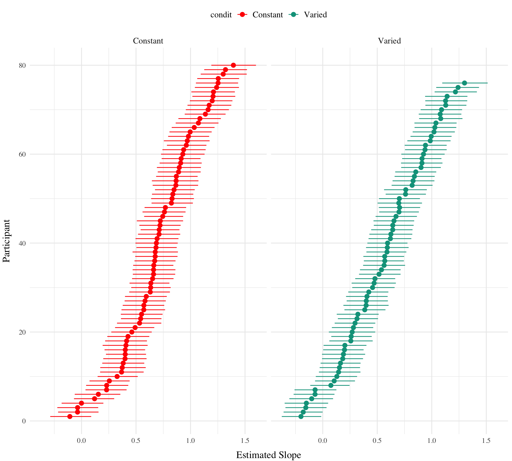
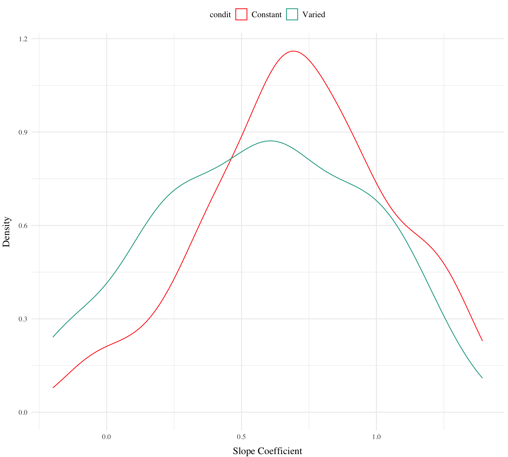
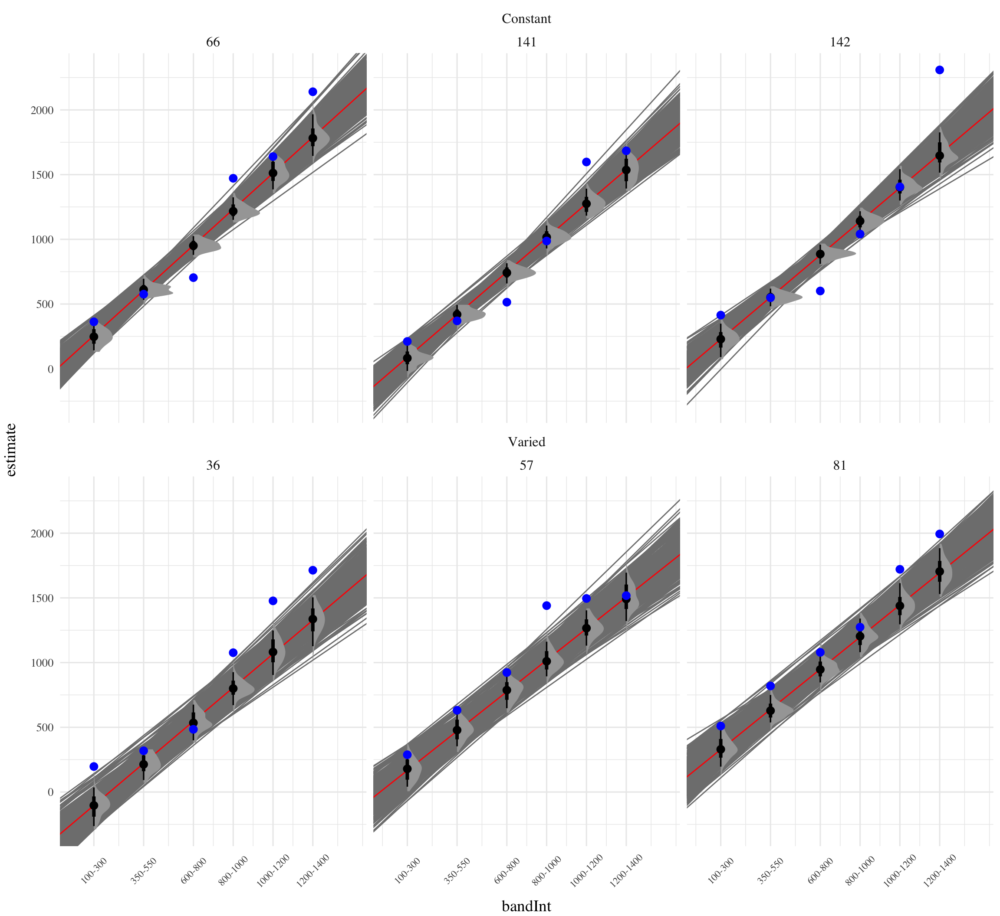
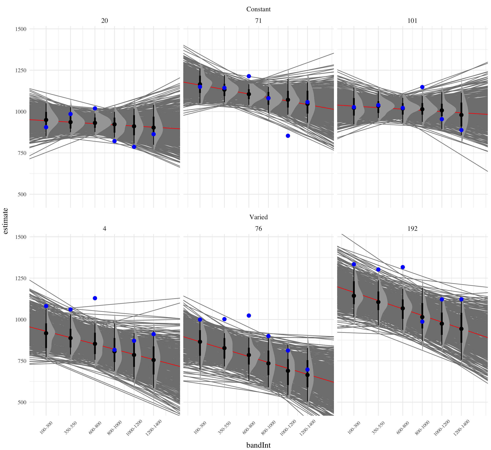
E1 Results Discussion
NEEDS TO BE WRITTEN
References
Bürkner, P.-C. (2017). Brms: An R Package for Bayesian Multilevel Models Using Stan. Journal of Statistical Software, 80, 1–28. https://doi.org/10.18637/jss.v080.i01
Makowski, D., Ben-Shachar, M. S., & Lüdecke, D. (2019). bayestestR: Describing Effects and their Uncertainty, Existence and Significance within the Bayesian Framework. Journal of Open Source Software, 4(40), 1541. https://doi.org/10.21105/joss.01541
Team, R. C. (2020). R: A Language and Environment for Statistical Computing. R: A Language and Environment for Statistical Computing.
Appendix
Experiment 2
Figure 8 illustrates the design of Experiment 2. The stages of the experiment (i.e. training, testing no-feedback, test with feedback), are identical to that of Experiment 1. The only change is that Experiment 2 participants train, and then test, on bands in the reverse order of Experiment 1 (i.e. training on the softer bands; and testing on the harder bands).
Results
Testing Phase - No feedback.
In the first part of the testing phase, participants are tested from each of the velocity bands, and receive no feedback after each throw.
Deviation From Target Band
Descriptive summaries testing deviation data are provided in Table 7 and Figure 9. To model differences in accuracy between groups, we used Bayesian mixed effects regression models to the trial level data from the testing phase. The primary model predicted the absolute deviation from the target velocity band (dist) as a function of training condition (condit), target velocity band (band), and their interaction, with random intercepts and slopes for each participant (id).
\[\begin{equation} dist_{ij} = \beta_0 + \beta_1 \cdot condit_{ij} + \beta_2 \cdot band_{ij} + \beta_3 \cdot condit_{ij} \cdot band_{ij} + b_{0i} + b_{1i} \cdot band_{ij} + \epsilon_{ij} \end{equation}\]
Code
```{r}
#| label: tbl-e2-test-nf-deviation
#| tbl-cap: "Testing Deviation - Empirical Summary"
#| tbl-subcap: ["Constant Testing - Deviation", "Varied Testing - Deviation"]
result <- test_summary_table(testE2, "dist","Deviation", mfun = list(mean = mean, median = median, sd = sd))
result$constant
result$varied
# make kable table with smaller font size
# result$constant |> kbl(caption="Constant Testing - Deviation",booktabs=T,escape=F) |> kable_styling(font_size = 7)
```| Band | Band Type | Mean | Median | Sd |
|---|---|---|---|---|
| 100-300 | Extrapolation | 206 | 48 | 317 |
| 350-550 | Extrapolation | 194 | 86 | 268 |
| 600-800 | Trained | 182 | 112 | 240 |
| 800-1000 | Extrapolation | 200 | 129 | 233 |
| 1000-1200 | Extrapolation | 238 | 190 | 234 |
| 1200-1400 | Extrapolation | 311 | 254 | 288 |
| Band | Band Type | Mean | Median | Sd |
|---|---|---|---|---|
| 100-300 | Trained | 153 | 25 | 266 |
| 350-550 | Trained | 138 | 53 | 233 |
| 600-800 | Trained | 160 | 120 | 183 |
| 800-1000 | Extrapolation | 261 | 207 | 257 |
| 1000-1200 | Extrapolation | 305 | 258 | 273 |
| 1200-1400 | Extrapolation | 363 | 314 | 297 |
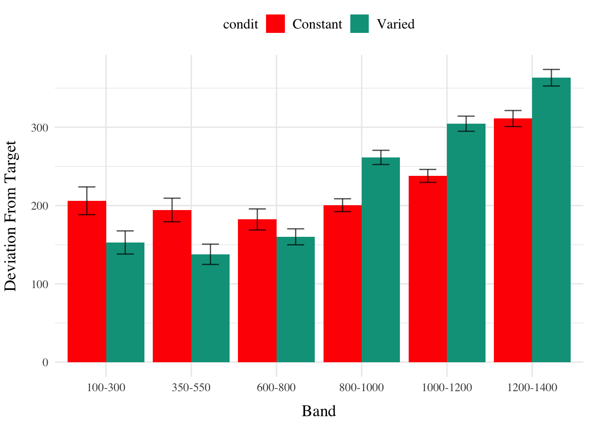
| Term | Estimate | 95% CrI Lower | 95% CrI Upper | pd |
|---|---|---|---|---|
| Intercept | 151.71 | 90.51 | 215.86 | 1.00 |
| conditVaried | -70.33 | -156.87 | 16.66 | 0.94 |
| Band | 0.10 | 0.02 | 0.18 | 1.00 |
| condit*Band | 0.12 | 0.02 | 0.23 | 0.99 |
| contrast | Band | value | lower | upper | pd |
|---|---|---|---|---|---|
| Constant - Varied | 100 | 57.57 | -20.48 | 135.32 | 0.93 |
| Constant - Varied | 350 | 26.60 | -30.93 | 83.84 | 0.83 |
| Constant - Varied | 600 | -4.30 | -46.73 | 38.52 | 0.58 |
| Constant - Varied | 800 | -29.30 | -69.38 | 11.29 | 0.92 |
| Constant - Varied | 1000 | -54.62 | -101.06 | -5.32 | 0.98 |
| Constant - Varied | 1200 | -79.63 | -139.47 | -15.45 | 0.99 |
The model predicting absolute deviation showed a modest tendency for the varied training group to have lower deviation compared to the constant training group (β = -70.33, 95% CI [-156.87, 16.66]),with 94% of the posterior distribution being less than 0. This suggests a potential benefit of training with variation, though the evidence is not definitive.
(SHOULD PROBABLY DO ALTERNATE ANALYSIS THAT ONLY CONSIDERS THE NOVEL EXTRAPOLATION BANDS)
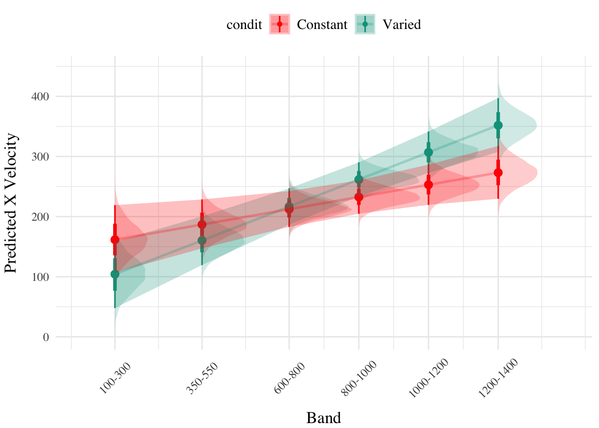
Discrimination between Velocity Bands
In addition to accuracy/deviation. We also assessed the ability of participants to reliably discriminate between the velocity bands (i.e. responding differently when prompted for band 600-800 than when prompted for band 150-350). Table 9 shows descriptive statistics of this measure, and Figure 1 visualizes the full distributions of throws for each combination of condition and velocity band. To quantify discrimination, we again fit Bayesian Mixed Models as above, but this time the dependent variable was the raw x velocity generated by participants.
\[\begin{equation} vx_{ij} = \beta_0 + \beta_1 \cdot condit_{ij} + \beta_2 \cdot bandInt_{ij} + \beta_3 \cdot condit_{ij} \cdot bandInt_{ij} + b_{0i} + b_{1i} \cdot bandInt_{ij} + \epsilon_{ij} \end{equation}\]
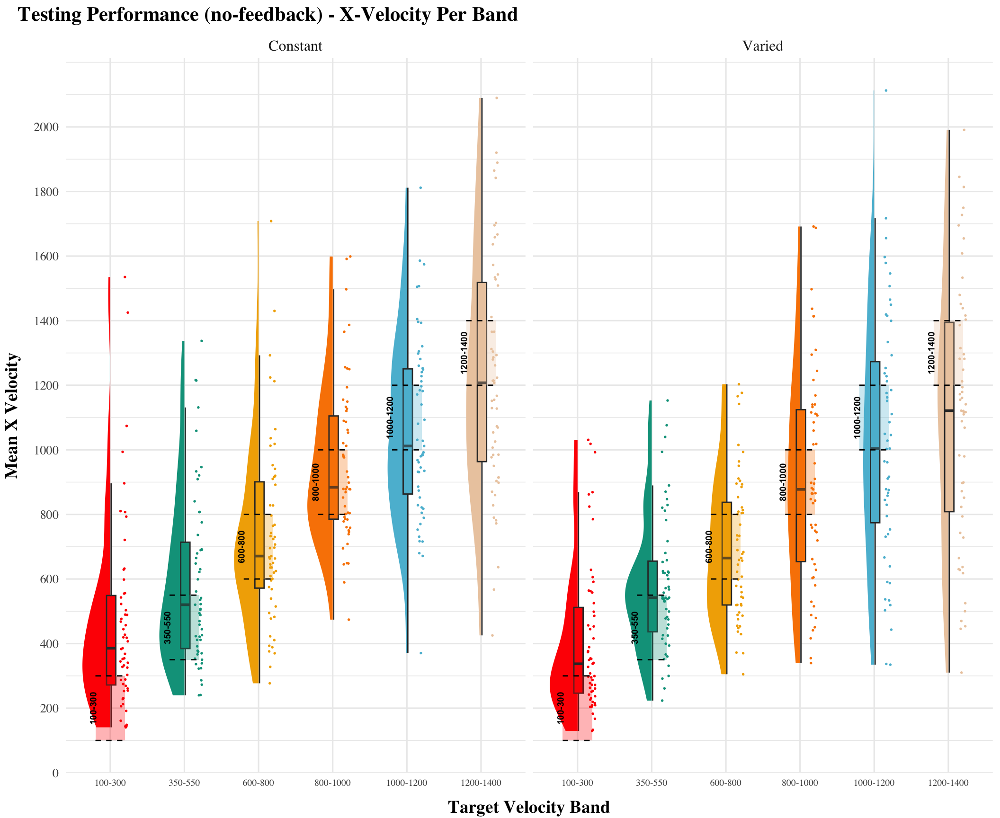
Code
```{r}
#| label: tbl-e2-test-nf-vx
#| tbl-cap: "Testing vx - Empirical Summary"
#| tbl-subcap: ["Constant Testing - vx", "Varied Testing - vx"]
#| layout-ncol: 2
result <- test_summary_table(testE2, "vx","X Velocity" ,mfun = list(mean = mean, median = median, sd = sd))
result$constant
result$varied
```| Band | Band Type | Mean | Median | Sd |
|---|---|---|---|---|
| 100-300 | Extrapolation | 457 | 346 | 354 |
| 350-550 | Extrapolation | 597 | 485 | 368 |
| 600-800 | Trained | 728 | 673 | 367 |
| 800-1000 | Extrapolation | 953 | 913 | 375 |
| 1000-1200 | Extrapolation | 1064 | 1012 | 408 |
| 1200-1400 | Extrapolation | 1213 | 1139 | 493 |
| Band | Band Type | Mean | Median | Sd |
|---|---|---|---|---|
| 100-300 | Trained | 410 | 323 | 297 |
| 350-550 | Trained | 582 | 530 | 303 |
| 600-800 | Trained | 696 | 641 | 316 |
| 800-1000 | Extrapolation | 910 | 848 | 443 |
| 1000-1200 | Extrapolation | 1028 | 962 | 482 |
| 1200-1400 | Extrapolation | 1095 | 1051 | 510 |
| Term | Estimate | 95% CrI Lower | 95% CrI Upper | pd |
|---|---|---|---|---|
| Intercept | 362.64 | 274.85 | 450.02 | 1.00 |
| conditVaried | -8.56 | -133.97 | 113.98 | 0.55 |
| Band | 0.71 | 0.58 | 0.84 | 1.00 |
| condit*Band | -0.06 | -0.24 | 0.13 | 0.73 |
See Table 10 for the full model results.
When examining discrimination ability using the model predicting raw x-velocity, the results were less clear than those of the absolute deviation analysis. The slope on Velocity Band (β = 0.71, 95% CrI [0.58, 0.84]) indicates that participants showed good discrimination between bands overall. However, the interaction term suggested this effect was not modulated by training condition (β = -0.06, 95% CrI [-0.24, 0.13]) Thus, while varied training may provide some advantage for accuracy, it does not appear to impair the ability to discriminate between velocity bands relative to constant training.

| Condition | Q_0%_mean | Q_25%_mean | Q_50%_mean | Q_75%_mean | Q_100%_mean |
|---|---|---|---|---|---|
| Constant | -0.2797840 | 0.3886580 | 0.6981703 | 1.0758890 | 1.610943 |
| Varied | -0.2457912 | 0.3080712 | 0.6841576 | 0.9524969 | 1.800885 |
Figure 13 shows the distributions of estimated slopes relating velocity band to x velocity for each participant, ordered from lowest to highest within condition. Slope values are lower overall for varied training compared to constant training. Figure Xb plots the density of these slopes for each condition. The distribution for varied training has more mass at lower values than the constant training distribution. Both figures illustrate the model’s estimate that varied training resulted in less discrimination between velocity bands, evidenced by lower slopes on average.
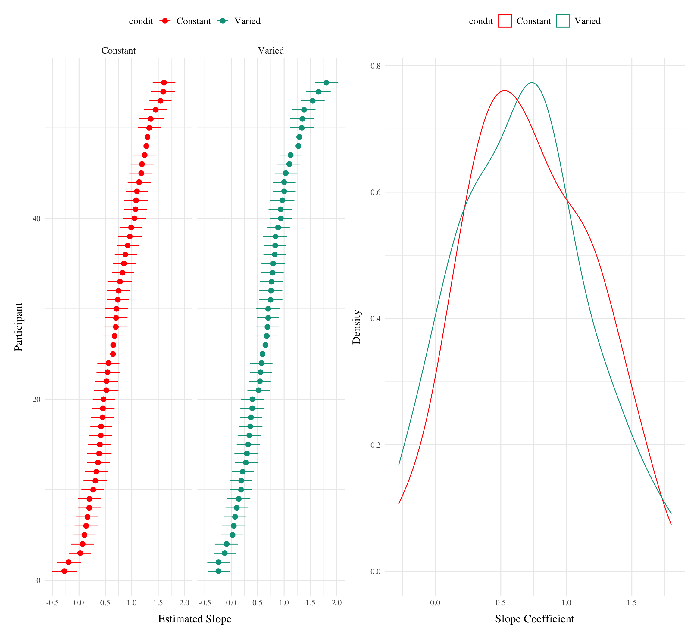
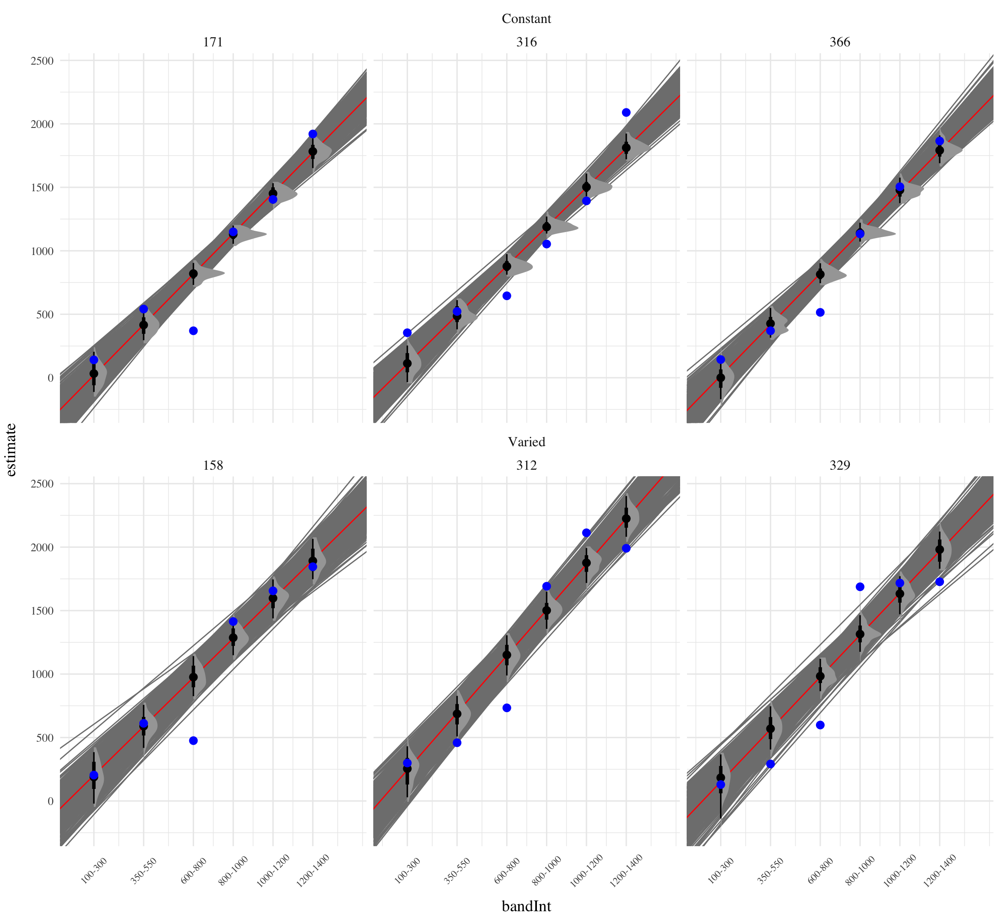
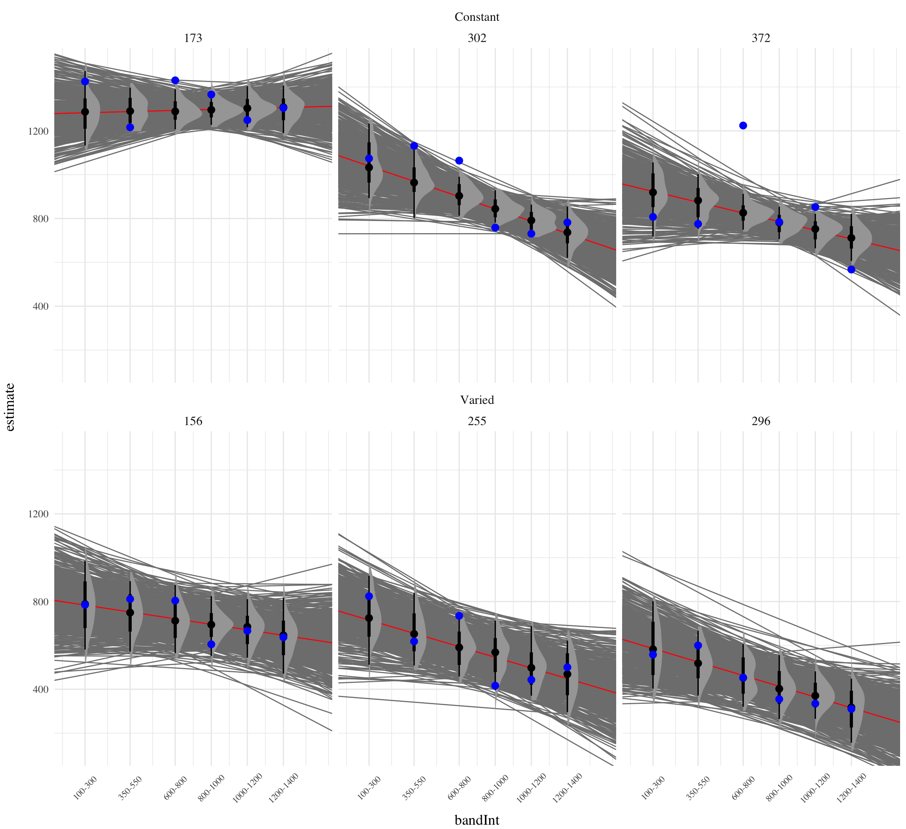
Experiment 3
The major manipulation adjustment of experiment 3 is for participants to receive ordinal feedback during training, in contrast to the continuous feedback of the earlier experiments. Ordinal feedback informs participants whether a throw was too soft, too hard, or fell within the target velocity range. Experiment 3 participants were randomly assigned to both a training condition (Constant vs. Varied) and a Band Order condition (original order used in Experiment 1, or the Reverse order of Experiment 2).
Results
Testing Phase - No feedback.
In the first part of the testing phase, participants are tested from each of the velocity bands, and receive no feedback after each throw. Note that these no-feedback testing trials are identical to those of Experiment 1 and 2, as the ordinal feedback only occurs during the training phase, and final testing phase, of Experiment 3.
Deviation From Target Band
Descriptive summaries testing deviation data are provided in Table 12 and Figure 15. To model differences in accuracy between groups, we fit Bayesian mixed effects regression models to the trial level data from the testing phase. The primary model predicted the absolute deviation from the target velocity band (dist) as a function of training condition (condit), target velocity band (band), and their interaction, with random intercepts and slopes for each participant (id).
Code
```{r}
#| label: tbl-e3-test-nf-deviation
#| tbl-cap: "Testing Deviation - Empirical Summary"
#| tbl-subcap: ["Constant Testing - Deviation", "Varied Testing - Deviation"]
#| layout-ncol: 2
resultOrig <- test_summary_table(testE3 |> filter(bandOrder=="Original"), "dist","Deviation", mfun = list(mean = mean, median = median, sd = sd))
resultOrig$constant
resultOrig$varied
resultRev <- test_summary_table(testE3 |> filter(bandOrder=="Reverse"), "dist","Deviation", mfun = list(mean = mean, median = median, sd = sd))
resultRev$constant
resultRev$varied
```| Band | Band Type | Mean | Median | Sd |
|---|---|---|---|---|
| 100-300 | Extrapolation | 396 | 325 | 350 |
| 350-550 | Extrapolation | 278 | 176 | 299 |
| 600-800 | Extrapolation | 173 | 102 | 215 |
| 800-1000 | Trained | 225 | 126 | 284 |
| 1000-1200 | Extrapolation | 253 | 192 | 271 |
| 1200-1400 | Extrapolation | 277 | 210 | 262 |
| Band | Band Type | Mean | Median | Sd |
|---|---|---|---|---|
| 100-300 | Extrapolation | 383 | 254 | 385 |
| 350-550 | Extrapolation | 287 | 154 | 318 |
| 600-800 | Extrapolation | 213 | 140 | 244 |
| 800-1000 | Trained | 199 | 142 | 209 |
| 1000-1200 | Trained | 222 | 163 | 221 |
| 1200-1400 | Trained | 281 | 227 | 246 |
| Band | Band Type | Mean | Median | Sd |
|---|---|---|---|---|
| 100-300 | Extrapolation | 403 | 334 | 383 |
| 350-550 | Extrapolation | 246 | 149 | 287 |
| 600-800 | Trained | 155 | 82 | 209 |
| 800-1000 | Extrapolation | 207 | 151 | 241 |
| 1000-1200 | Extrapolation | 248 | 220 | 222 |
| 1200-1400 | Extrapolation | 322 | 281 | 264 |
| Band | Band Type | Mean | Median | Sd |
|---|---|---|---|---|
| 100-300 | Trained | 153 | 0 | 307 |
| 350-550 | Trained | 147 | 55 | 258 |
| 600-800 | Trained | 159 | 107 | 192 |
| 800-1000 | Extrapolation | 221 | 160 | 235 |
| 1000-1200 | Extrapolation | 244 | 185 | 235 |
| 1200-1400 | Extrapolation | 324 | 264 | 291 |
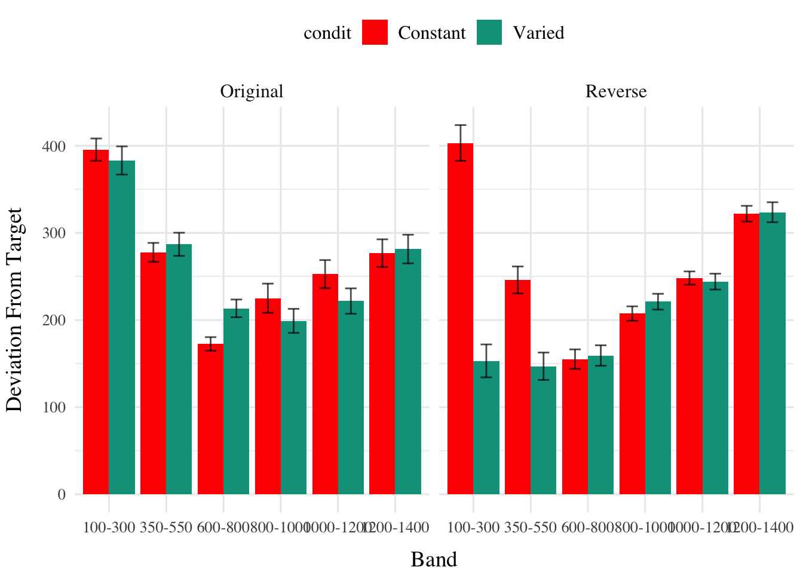
| Term | Estimate | 95% CrI Lower | 95% CrI Upper | pd |
|---|---|---|---|---|
| Intercept | 306.47 | 243.89 | 368.75 | 1.00 |
| conditVaried | -90.65 | -182.79 | 3.75 | 0.97 |
| Band | -0.07 | -0.13 | 0.00 | 0.97 |
| condit*Band | 0.09 | -0.01 | 0.19 | 0.96 |
The effect of training condition in Experiment 3 showed a similar pattern to Experiment 2, with the varied group tending to have lower deviation than the constant group (β = -90.65, 95% CrI [-182.79, 3.75]), with 97% of the posterior distribution falling under 0.
(NEED TO CONTROL FOR BAND ORDER HERE)
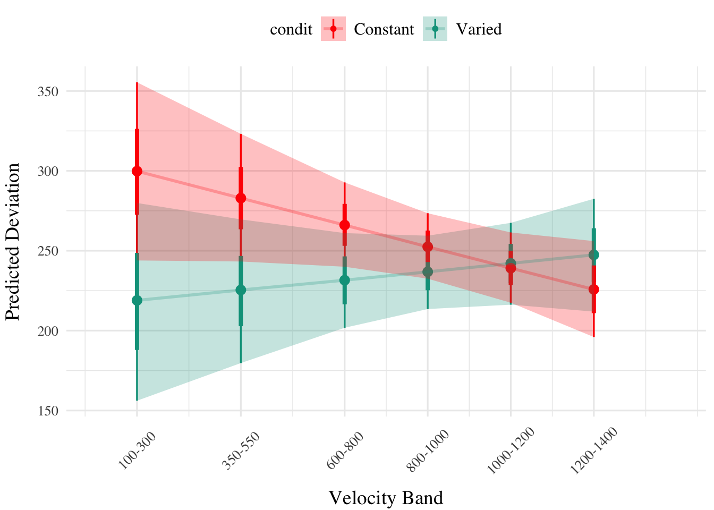
Discrimination between Velocity Bands
In addition to accuracy/deviation. We also assessed the ability of participants to reliably discriminate between the velocity bands (i.e. responding differently when prompted for band 600-800 than when prompted for band 150-350). Table 14 shows descriptive statistics of this measure, and Figure 1 visualizes the full distributions of throws for each combination of condition and velocity band. To quantify discrimination, we again fit Bayesian Mixed Models as above, but this time the dependent variable was the raw x velocity generated by participants.
\[\begin{equation} vx_{ij} = \beta_0 + \beta_1 \cdot condit_{ij} + \beta_2 \cdot bandInt_{ij} + \beta_3 \cdot condit_{ij} \cdot bandInt_{ij} + b_{0i} + b_{1i} \cdot bandInt_{ij} + \epsilon_{ij} \end{equation}\]
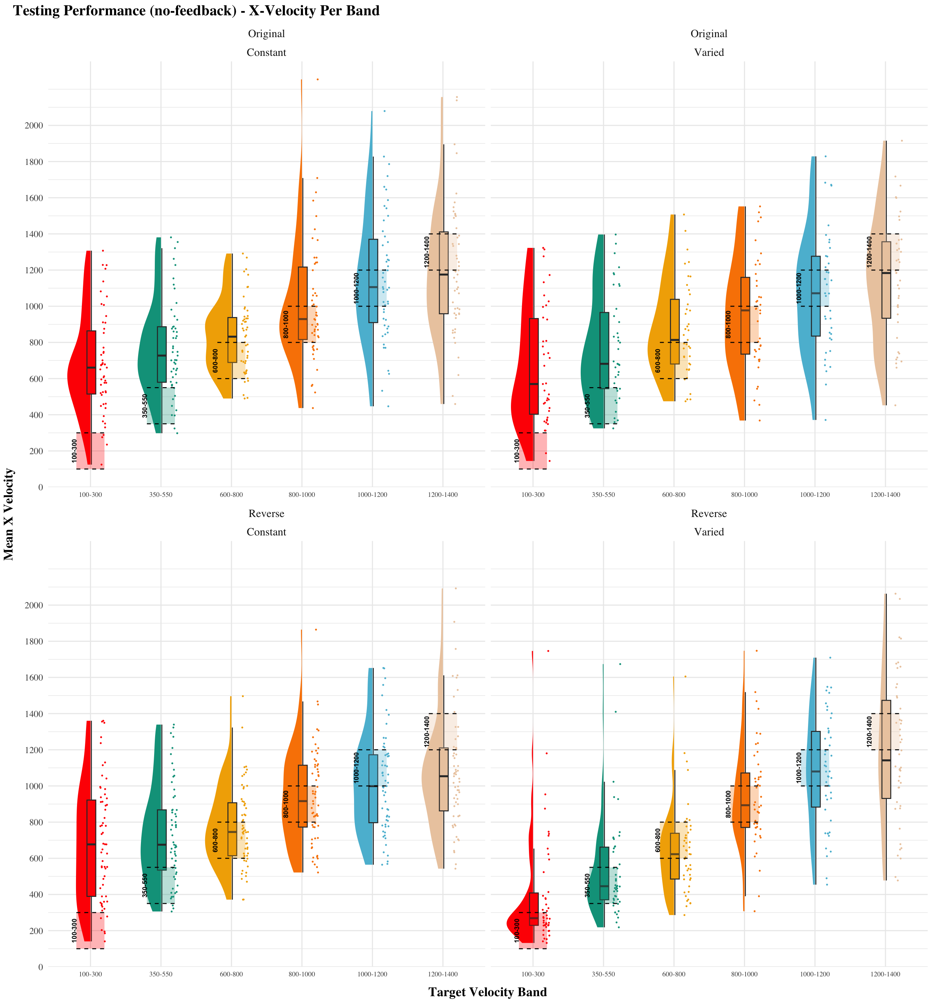
Code
```{r}
#| label: tbl-e3-test-nf-vx
#| tbl-cap: "Testing vx - Empirical Summary"
#| tbl-subcap: ["Constant Testing - vx", "Varied Testing - vx"]
#| layout-ncol: 2
resultOrig <- test_summary_table(testE3 |> filter(bandOrder=="Original"), "vx","X Velocity", mfun = list(mean = mean, median = median, sd = sd))
resultOrig$constant
resultOrig$varied
resultRev <- test_summary_table(testE3 |> filter(bandOrder=="Reverse"), "vx","X Velocity", mfun = list(mean = mean, median = median, sd = sd))
resultRev$constant
resultRev$varied
```| Band | Band Type | Mean | Median | Sd |
|---|---|---|---|---|
| 100-300 | Extrapolation | 680 | 625 | 370 |
| 350-550 | Extrapolation | 771 | 716 | 357 |
| 600-800 | Extrapolation | 832 | 786 | 318 |
| 800-1000 | Trained | 1006 | 916 | 417 |
| 1000-1200 | Extrapolation | 1149 | 1105 | 441 |
| 1200-1400 | Extrapolation | 1180 | 1112 | 443 |
| Band | Band Type | Mean | Median | Sd |
|---|---|---|---|---|
| 100-300 | Extrapolation | 667 | 554 | 403 |
| 350-550 | Extrapolation | 770 | 688 | 383 |
| 600-800 | Extrapolation | 869 | 814 | 358 |
| 800-1000 | Trained | 953 | 928 | 359 |
| 1000-1200 | Trained | 1072 | 1066 | 388 |
| 1200-1400 | Trained | 1144 | 1093 | 426 |
| Band | Band Type | Mean | Median | Sd |
|---|---|---|---|---|
| 100-300 | Extrapolation | 684 | 634 | 406 |
| 350-550 | Extrapolation | 729 | 679 | 350 |
| 600-800 | Trained | 776 | 721 | 318 |
| 800-1000 | Extrapolation | 941 | 883 | 387 |
| 1000-1200 | Extrapolation | 1014 | 956 | 403 |
| 1200-1400 | Extrapolation | 1072 | 1014 | 442 |
| Band | Band Type | Mean | Median | Sd |
|---|---|---|---|---|
| 100-300 | Trained | 392 | 270 | 343 |
| 350-550 | Trained | 540 | 442 | 343 |
| 600-800 | Trained | 642 | 588 | 315 |
| 800-1000 | Extrapolation | 943 | 899 | 394 |
| 1000-1200 | Extrapolation | 1081 | 1048 | 415 |
| 1200-1400 | Extrapolation | 1185 | 1129 | 500 |
| Term | Estimate | 95% CrI Lower | 95% CrI Upper | pd |
|---|---|---|---|---|
| Intercept | 607.67 | 536.02 | 679.87 | 1 |
| conditVaried | -167.76 | -277.14 | -64.08 | 1 |
| Band | 0.44 | 0.35 | 0.52 | 1 |
| condit*Band | 0.18 | 0.06 | 0.31 | 1 |
See Table 15 for the full model results.
Slope estimates for experiment 3 suggest that participants were capable of distinguishing between velocity bands even when provided only ordinal feedback during training (β = 0.44, 95% CrI [0.35, 0.52]). Unlike the previous two experiments, the posterior distribution for the interaction between condition and band was consistently positive, suggestive of superior discrimination for the varied participants β = 0.18, 95% CrI [0.06, 0.31].
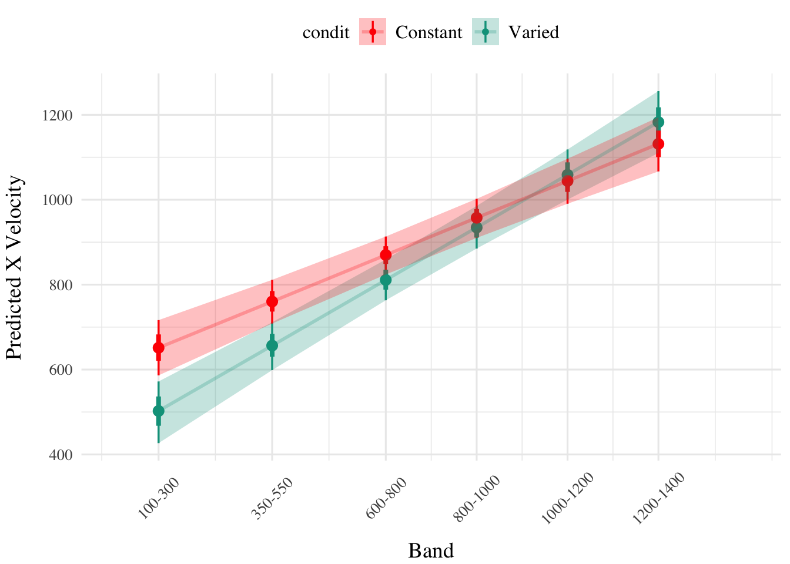
| Condition | Q_0%_mean | Q_25%_mean | Q_50%_mean | Q_75%_mean | Q_100%_mean |
|---|---|---|---|---|---|
| Constant | -0.3469000 | 0.1197335 | 0.4228148 | 0.6388502 | 1.93313 |
| Varied | -0.3164245 | 0.2488080 | 0.5945318 | 0.9145175 | 1.74875 |
Figure 19 shows the distributions of estimated slopes relating velocity band to x velocity for each participant, ordered from lowest to highest within condition. Slope values are lower overall for varied training compared to constant training. Figure Xb plots the density of these slopes for each condition. The distribution for varied training has more mass at lower values than the constant training distribution. Both figures illustrate the model’s estimate that varied training resulted in less discrimination between velocity bands, evidenced by lower slopes on average.
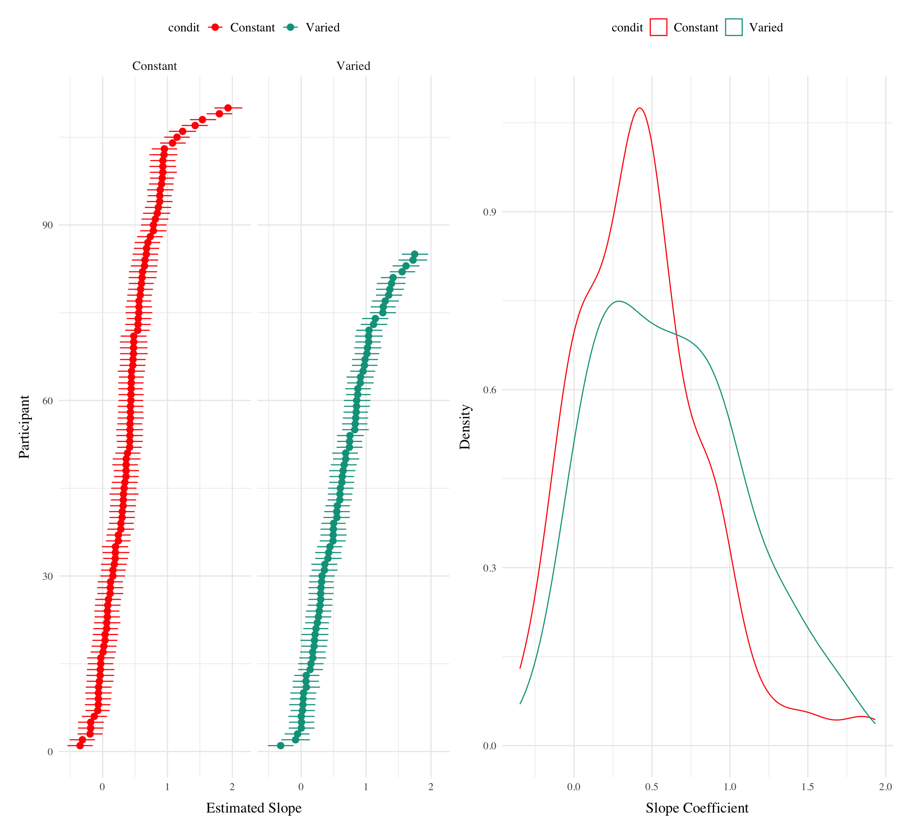
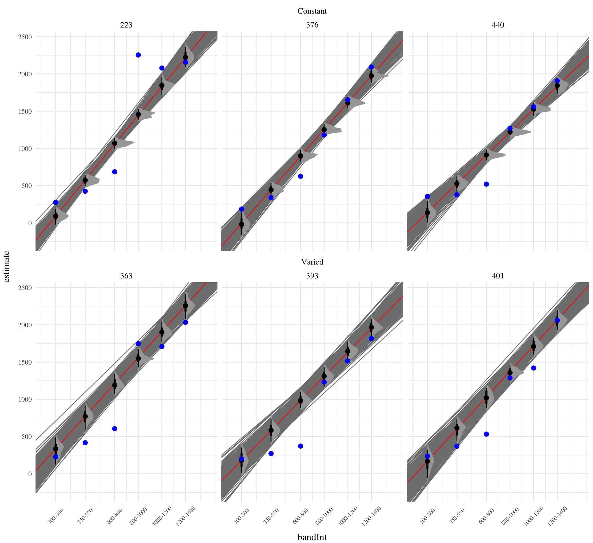
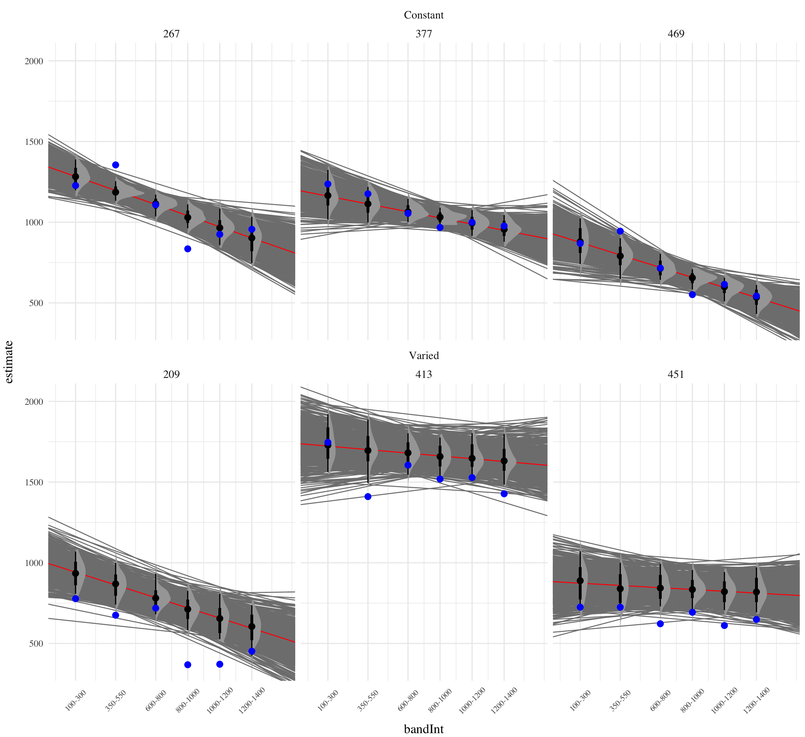